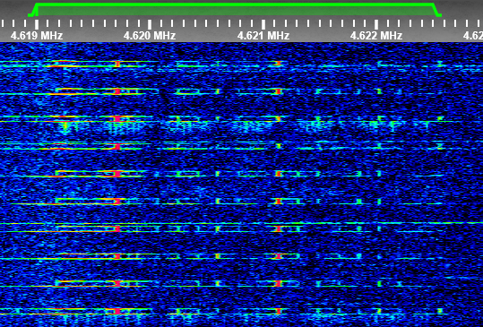

Recipient calls: Oblava12, Barkhat19
| Frequency | Time | Shift UTC |
|---|---|---|
| 6878 kHz | Day | 2250z/2300z |
| 4619 kHz | Night | 0950z/1000z |
The Station operate at 6878 kHz for day time and 4619 kHz in night time (in asian time), the station is operated as we know yet by 2 operators male and female.
The Station have 2 scheduled test counts at 0200z and 1400z UTC, the caller is Pikhta26, else the station transmit monolith format messages with Recipient callsigns.
Day/Night shift are 0958z UTC for Day -> Night and around 0000z/0100z UTC for Night -> Day shift.
The current marker of this station is a 700Hz pip and a transmitter noise+50hum when the marker is off to keep the Frequency busy.
After each frequency shift, the station use a 700Hz beep during around 13 minutes and then enable the Pip marker.
Audio Sample:
Waterfall Image:

Waterfall Image from a potential voice message: 
Voice Message:
Transcription: Oblava12 25569 LOVKOST' 5421 6362
All media files above are from To5no.
Test count (female):
Transcription: Ya Pikhta26, 1 2 3 4 5 6 7 8 9 10, Priyom.